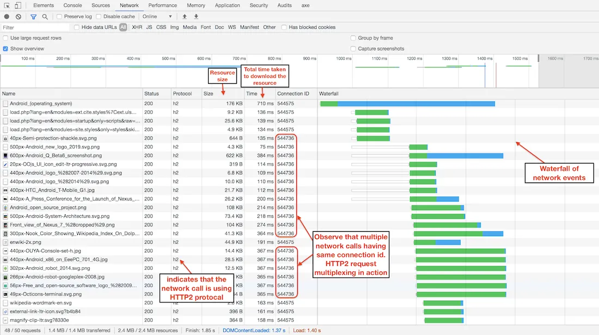
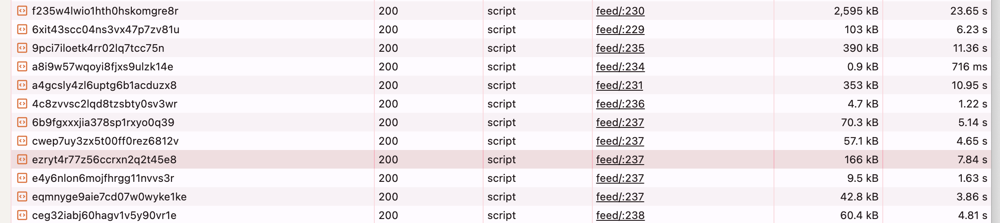
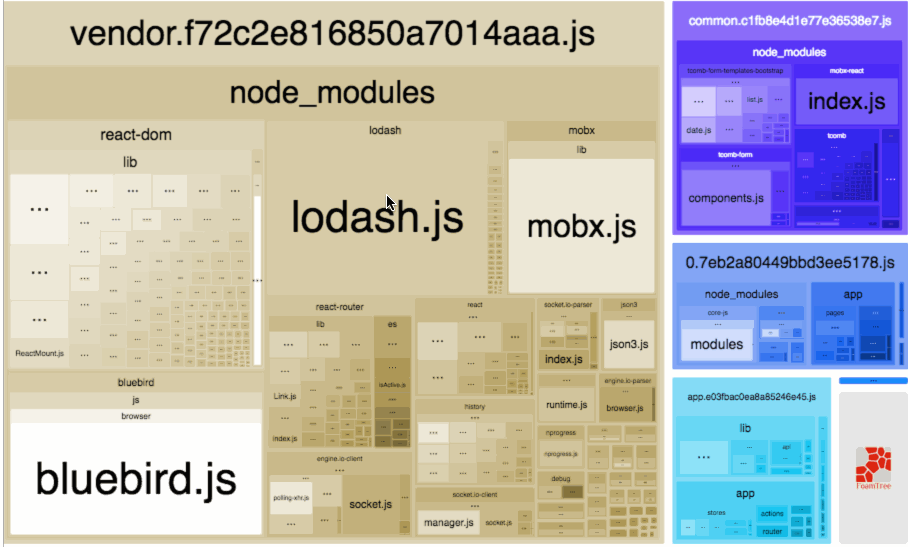

Optimizing
Navigation Performance
in Web Apps
The Loading Waterfall Problem

What is it? Sequential data fetching causes each request to wait for the previous one to
finish.Impact: Dramatically increases total page load time—users wait longer to see content.Common Causes: Nested API calls, component-level fetches, poor data architecture.
Discuss the loading waterfall problem, emphasizing how sequential requests lead to longer load times.
Use the image to illustrate the concept visually.
https://nischithbm.medium.com/web-performance-optimizing-the-network-waterfall-8a65df932df6
Client-Side Data Fetching Overhead
import axios from "axios";
import { useEffect, useState } from "react";
const ClientFetchDemo = () => {
const [data, setData] = useState([]);
const [loading, setLoading] = useState(true);
useEffect(() => {
axios.get("https://reqres.in/api/unknown")
.then(res => setData(res.data.data))
.finally(() => setLoading(false));
}, []);
if (loading) return <p>Loading...</p>;
return (
<ul>
{data.map(item => (
<li key={item.id}>{item.name}</li>
))}
</ul>
);
};
export default ClientFetchDemo;
Slower initial loads: UI waits for JS bundle and then fetches data, delaying content display.
Extra network round trips: Browser loads app, then makes API calls, increasing latency.Larger JS bundles: More logic shipped to client, slowing down page load and execution.
Client-side fetching offers flexibility and real-time updates, but comes with performance
costs—especially for first-time visitors or users on slow networks. Prefer server-side fetching for critical or
SEO-relevant data.
No built-in caching: Repeated fetches unless you add client-side caching solutions.SEO limitations: Content not in initial HTML, making it harder for search engines to index.
JavaScript Bundle Fetching Problem

Large Bundles: Modern apps often ship hundreds of KBs of JS by default.Slow First Paint: Browsers must download, parse, and execute all JS before rendering UI.Performance Penalty: Increased Time to Interactive (TTI) and poor Core Web Vitals.
Device Impact: Slower devices and networks suffer even more.Wasted Resources: Users may never use much of the code they download.Performance Penalty: Increased Time to Interactive (TTI) and poor Core Web Vitals.
The JavaScript bundle fetching problem is one of the most common bottlenecks in modern web performance. When a user visits a web app, the browser often has to download a large JavaScript bundle before anything meaningful can be displayed. This bundle can easily be hundreds of kilobytes or even several megabytes, especially in single-page apps with many dependencies.
The problem gets worse on slow networks or older devices: not only does downloading the bundle take longer, but parsing and executing it can also be CPU-intensive. This means users may stare at a blank screen or a spinner for several seconds, leading to frustration and higher bounce rates.
Another issue is that much of the code in these bundles is never used in a given session. For example, a user might only visit the homepage, but still downloads all the code for the admin dashboard, checkout flow, and other features. This is wasted bandwidth and processing.
To address this, modern best practices include code splitting, lazy loading, and server components. By breaking the bundle into smaller chunks and only loading what's needed for the current view, we can drastically reduce initial load times and improve both perceived and actual performance.
Always monitor your JavaScript bundle size, use tools like Webpack Bundle Analyzer, and set performance budgets to keep your app fast and responsive.
How do we make our apps faster?
One Roundtrip Per Navigation
Instead of: URL → Code → Fetch → Render
Do this: URL → [Code + Data] → Render
Server knows what to send based on routeThis enables faster, flicker-free navigation
/* Instead of this waterfall */
navigate('/dashboard') →
load Dashboard.js →
fetch('/api/dashboard-data')
Server Loaders: Break the Waterfall
Server loaders flip the common SPA model — instead of fetching data on the client *after* route match, the server intercepts navigation, runs the appropriate loader, and returns data + markup in a single roundtrip.
These are route-aware, meaning the data required for a route is known at navigation time.
Why move the loader to the server?
If you don’t treat the server as a black box beyond your control,
the server is the natural place to put your data fetching code.
On the server, you have all the levers to improve common performance problems.
You often have control over latency—for example, you can move your BFF server closer to the data source.
Then even inherent waterfalls will be cheap. If the data source is slow,
you have ability to add cross-request caching on the server. You also have the option of
dispensing with microservices entirely and moving your data layer to be in-process, like in Rails:
Gotchas:
- Loaders must stay serializable — no access to browser-only APIs.
- Loader APIs must be fast — users wait for them during navigation.
- Auth, cookies, and headers are part of the server context — misuse can lead to incorrect data or caching bugs.
Loaders are tied to routes — fetch route-specific data before render
Executed on the server (SSR) or at navigation time (SPA)
No useEffect. No extra fetch. No waterfall.
// React Router 6.4+
const router = createBrowserRouter([
{
path: "/invoices/:id",
loader: async ({ params }) => {
return fetch(`/api/invoices/${params.id}`);
},
element:
// Remix example
export async function loader({ params }) {
const invoice = await getInvoiceById(params.id);
return json(invoice);
}
Navigation triggers data + code load in one go
React Server Components
Each component = its own server-side data loader Server starts rendering from the top: no client-side fetch
Data dependencies live alongside components (not centralized)
Client gets a preloaded tree — no JS waterfall
// Server Components
async function PostContent({ postId }) {
const post = await loadPost(postId);
return (
<article>
<h1>{post.title}</h1>
<p>{post.content}</p>
<Comments postId={postId} />
</article>
);
}
async function Comments({ postId }) {
const comments = await loadComments(postId);
return (
<ul>{comments.map(c => <li key={c.id}>{c.text}</li>)}</ul>
);
}
Result: Navigation triggers a single streamed tree with code + data
✅ Server Components are like “co-located server loaders” — each can independently fetch data before rendering itself or its children.
🧠 Think of this like React’s old "Container + Presentational" pattern — except containers run on the server, and presentational parts run on the client.
🔥 Major wins:
- Data fetching is modular and colocated (no global loaders or API layers needed)
- Code is easy to reason about: no custom fetch hooks, no effect-based APIs
- Optimizations like server caching, edge rendering, and streaming just work
⚠️ Caveats:
- Must learn the server/client boundary (`'use client'` directive)
- No access to browser-only APIs in server components (like `window`, `localStorage`)
- Server and client bundling is more complex (but handled by Next.js, etc.)
✨ But overall: You get a clean, predictable, HTML-like mental model — and a real fix for SPA navigation waterfalls.
Prefetching: Eliminate Perceived Latency
Prefetch assets and data for likely next routesHappens on hover , viewport entry , or predictive heuristics
Frameworks like Next.js, Remix, and React Router automate this
Preloads code and data → instant-feeling navigation
// Next.js Link (auto prefetches on hover or visible)
import Link from 'next/link';
<Link href="/dashboard">Go to Dashboard</Link>
// Remix prefetch hint
<Link to="/profile" prefetch="intent">Profile</Link>
Result: Code + data already loaded by the time you click ⚡
✅ Prefetching bridges the gap between click and content — it shifts loading earlier.
- In Next.js, `
Persistent Layouts: Don't Tear Down Everything
Shared UI (e.g. navbars, sidebars) should not re-render on route change
Reduces UI flicker and improves perceived speed
Preserve state (scroll, form drafts, etc.) across pages
// React Router
<Layout>
<Navbar />
<Sidebar />
<Outlet />
</Layout>
// Next.js App Router
// app/layout.tsx
export default function Layout({ children }) {
return (
<main>
<Navbar />
<Sidebar />
{children}
</main>
);
}
Result: Navigations feel like content swaps, not full reloads ✨
🧩 This is one of the lowest-effort, highest-impact changes you can make for navigation performance.
✅ In React Router, use `
Fix your bundle size :)

Use Smaller Libraries
Swap heavy libraries with lighter alternativesHelps reduce bundle size without refactoring logic
// Instead of moment.js (~300KB)
import dayjs from 'dayjs';
// Instead of lodash
import debounce from 'just-debounce-it';
Result: Smaller bundle, faster load — no effort wasted 🎯
🧠 This is often the fastest win: check your bundle analyzer — you might find you're shipping 300KB just for dates.
✅ Use libraries like:
- `dayjs`, `date-fns` instead of `moment.js`
- `just-*` utilities instead of `lodash`
- `clsx` instead of `classnames`
⚠️ Watch for transitive dependencies — sometimes your own packages bring the bloat.
📉 These swaps often reduce bundle size by 30–50KB+ in one go.
Defer Non-Critical JavaScript
Load features like analytics, chat, and widgets after paint
Use <script defer / async> or load on user interaction
Next.js: use <Script strategy="lazyOnload" />
// Next.js Script defer example
import Script from 'next/script';
<Script
src="https://analytics.example.com/script.js"
strategy="lazyOnload"
/>
Result: Critical path stays light, TTI improves ⚡
✅ Not everything needs to block rendering — defer anything not essential to first paint or first interaction.
- Lazy load analytics, feedback widgets, chatbots, or third-party embeds.
- Use `next/script` with `strategy="lazyOnload"` to load after `onload`.
- Avoid injecting scripts directly in custom components unless necessary — it breaks streaming and increases hydration time.
⚠️ Measure performance after deferring — some scripts might expect early DOM access or user state.
✨ Best paired with bundle splitting and RSC to keep initial JS footprint minimal.
Set Performance Budgets
What is it? A performance budget sets thresholds for metrics like JS size, TTI, LCPHelps catch regressions early in CI/CD pipelines
Makes performance a shared goal across teams
// Webpack Plugin Example
new BundleAnalyzerPlugin({
generateStatsFile: true,
statsOptions: { source: false },
})
Result: Prevent slow pages before they reach production 🚨
Build for Speed by Default 🚀
Optimize for minimal roundtrips per navigation
Use server-side data fetching where possible
Implement prefetching and persistent UI patterns
Keep JavaScript small, efficient, and deferred
Make performance a culture , not just a one-time fix
Fast apps = happy users = better business 💸